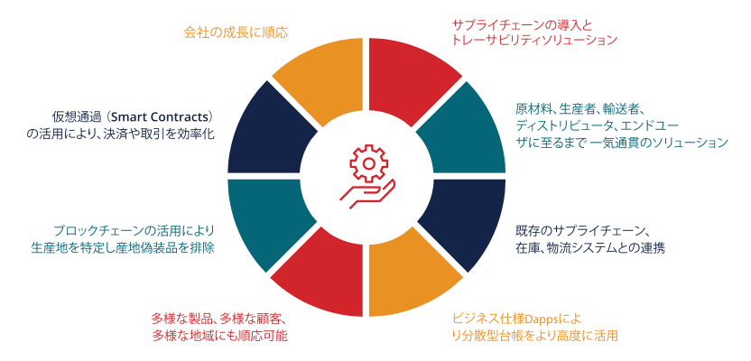

主要サービス

ブロックチェーン
ファーストQAシステムズは、ロンドンに本社を置くブロックチェーン開発会社であるHimitsu Lab Limitedのブロックチェーンフレームワークに、サプライチェーン管理のための産地・製造・
物流情報と、トレーサビリティのソリューションである“データの発生起点と軌道追跡機能”を実装した分散型台帳テクノロジー（DLT）を早期に採用しました。
ブロックチェーンは高度に暗号化された取引履歴がデータブロック上に時系列順に格納される為、偽装防止機能を有する革新的な物流管理システム技術です。 顧客企業がブロックチェーンのあらゆる可能性を追求することを支援し、データの信頼性証明やリコール時の製造ロット単位での追跡など、業務上の付加価値を提供す るために設計されたDApps（分散型アプリケーションケーション）の実装を可能にします。アーキテクチャ、設計、開発を通じて、顧客の真の課題解決を目的とした最新のブ ロックチェーンソリューションを提供いたします。
当社の強み：
ブロックチェーンは高度に暗号化された取引履歴がデータブロック上に時系列順に格納される為、偽装防止機能を有する革新的な物流管理システム技術です。 顧客企業がブロックチェーンのあらゆる可能性を追求することを支援し、データの信頼性証明やリコール時の製造ロット単位での追跡など、業務上の付加価値を提供す るために設計されたDApps（分散型アプリケーションケーション）の実装を可能にします。アーキテクチャ、設計、開発を通じて、顧客の真の課題解決を目的とした最新のブ ロックチェーンソリューションを提供いたします。
当社の強み：
- 分散型台帳テクノロジー（DLT）アプリケーションの実装に関する専門知識
- プライベートおよびパブリックブロックチェーンアプリケーション
- スマートコントラクト（契約自動実行プロトコル）を活用したビジネスルールの自動化
- HyperledgerおよびNEMブロックチェーンプラットフォームに用意されたソリューション
- DockersとKubernetesを使用したHyperledgerプラットフォーム上のブロックチェーンソリューションフレームワーク フレームワークを迅速な実装のためのアクセラレータとして活用
- 市場投入までの時間短縮によるブロックチェーンの価値の獲得
導入実績のあるブロックチェーンサービス：
次世代の分散型ブロックチェーンプラットフォーム上に構築された新しいビジネスモデルの開発
分散型台帳を活用した分散型アプリケーションの実装
顧客との協働によるブロックチェーンの実現可能性の評価。ブロックチェーンのビジネスモデルとソリューションのユースケースと評価に向けた、概念実証（PoC）と実用最小限の製品（MVP）の実行

深い専門知識とフレームワークの活用による業界のブロックチェーンソリューションの企画と設計
イベントの発生起点とデータ属性の関連性を定義したIoTソリューションを統合
ファーストQA システムズは、Hyperledgerプラットフォームを使用して、産地・製造・物流情報とトレーサビリティ実現のためにHimitsu Labのデータの発生起点と軌道追跡機能を持つブロックチェーンフレームワークを実装しています。当社のソリューションは、あらゆる製造業の組織に適用できます。主な機能は次のとおりです。：
- サプライチェーンの起点およびトレーサビリティソリューション
- 原材料から製造、物流、流通業者そして最終消費者を通じたエンド・ツー・エンドのソリューション
- 既存のサプライチェーン、倉庫、物流システムとの統合
- 一意に識別された製品（製品またはパッケージ）のトレースバックとトレースフォワード
- マルチプロダクト、マルチクライアント、マルチロケーションに対応
- ブロックチェーンを活用した信頼性確保による不正行為の排除
- スマートコントラクトベースのビジネスロジック（計画的リリース）
- ビジネスの成長に合わせた、安全でスケーラブルなアーキテクチャ
⇒“データの発生起点と軌道追跡機能（トレース＆トラックSCM）の特徴と機能
